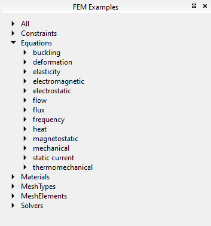

Release notes 0.19/fr
FreeCAD 0.19 a été publié le 20 mars 2021 et est disponible sur la page de téléchargement. Ceci est un résumé des changements les plus intéressants. La liste complète des modifications est disponible dans le journal des modifications MantisBT bugtracker FC 0.19.
Les notes de version plus anciennes de FreeCAD sont disponibles dans la liste des fonctionnalités.

Machine à vapeur à course courte Simpson et Shipton, vers 1845, à piston rotatif horizontal, par "un1corn", Users Showcase.
Points forts

|
Machine à vapeur à soupape rotative horizontale à 4 cylindres, par "un1corn", vitrine des utilisateurs. |

|
Conception préliminaire de MAORY, un module d'optique adaptative (AO) pour le télescope européen extrêmement grand (E-ELT) ; ici il est monté sur la plate-forme E-ELT Nasmyth.
Cet assemblage a été réalisé par "Zolko", auteur du nouvel Assembly4 Workbench, qui utilise le nouvel objet puissant App::Link pour importer des milliers de pièces et sous-assemblages différents, en les disposant dans des positions spécifiées au moyen d'expressions mathématiques. Voir Vitrine des utilisateurs. Pour ce modèle, les pièces n'étaient pas conçues dans FreeCAD, elles étaient juste importées au format STEP, puis arrangées avec Assembly4. |

|
Joint à vitesse constante M. GECIK, par l'utilisateur "ppemawm", voir Users Showcase. Le modèle est inversé, conçu à partir des fichiers STL individuels de Thingiverse par l'auteur original, NOP21. Veuillez noter la licence des fichiers originaux.
Les fichiers STL ont été téléchargés, enregistrés et importés dans FreeCAD. Ils ont été assemblés manuellement à l'aide de l'outil Std Transformer. Cet assemblage de maillage a été utilisé comme référence pour créer un solide corps avec PartDesign et puis assemblé à l'aide du nouvel atelier Assembly4. Le modèle a été démarré avec Assembly4 et chaque pièce a été créée en contexte référençant le modèle STL pour les dimensions esquisse; des esquisses ont été créées à l'échelle 1:1 avec le modèle STL en arrière-plan. |

|
L'atelier TechDraw Parmi les nombreuses petites améliorations, les nouvelles fonctionnalités comprennent : les dimensions sont désormais conformes à l'une des normes ISO 129-1 ou ASME Y14.5M; de nouvelles bulles pour inclure du texte à l'intérieur d'un cercle ou d'un polygone; de nouvelles annotations de texte enrichi pour inclure de grands paragraphes en gras ou en italique; des sommets cosmétiques et arêtes cosmétiques qui ne font pas partie du modèle d'origine mais qui peuvent être utilisés pour créer des cotes personnalisées; des supports de base pour les symboles de soudage; nouveau mode d'affichage actif pour prendre un "instantané" de la vue 3D; nouveaux modèles de base pour les tailles ISO (A0 à A4), ainsi que des modèles de langue russe et chinoise; de nouvelles dimensions horizontales et verticales qui mesurent toute l'étendue des projections; les hachures de face SVG sont désormais disponibles lorsque la page est exportée en SVG; le nouvel objet App Link est désormais également pris en charge en tant que source pour la création de vues, ce qui est utile lorsque vous travaillez avec des assemblages. |
Généralités
Avec plus de 8128 commits dans la branche master depuis la version 0.18, il s'agit de l'une des versions les plus complètes de tous les temps, avec plusieurs nouveaux composants comme le nouvel objet "App::Link", ainsi que de nombreux nouveaux outils dans l'atelier TechDraw qui rendent FreeCAD encore plus puissant pour la modélisation et l'assemblage de solides 3D. En plus de cela, l'écosystème FreeCAD a continué de croître avec des ateliers externes plus spécialisés.
Python 3 et Qt5
L’effort de migration de Python 2 et Qt4 vers Python 3 et Qt5 est globalement terminé et la plupart des développeurs ont migré vers les chaînes d’outils Python3/Qt5.
Sans aucun doute, il y aura des bugs imprévus ; ceux-ci seront traités lorsqu'ils sont rapportés. Toute dépendance existante sur Python 2 ou Qt4 ne sera plus prise en charge au-delà du 1er janvier 2020, date à laquelle Python 2 ne sera officiellement plus pris en charge par la Fondation Python. Veuillez noter que certains addons n’ont pas encore été portés vers Python3/Qt5. Cela peut être dû à plusieurs raisons, notamment le manque de temps de la part de leurs développeurs, de dépendances brisées qui pourraient ne pas être facilement réparées, ou tout simplement parce que l'addon est considéré comme obsolète. Les personnes intéressées par la migration d'un atelier ou d'un outil particulier sont encouragées à participer au forum FreeCAD ; voir aussi Ateliers d'addon compatibles Python3 et Qt5 (en préparation depuis 0.18).
Quelques problèmes
Problème résolu avec la visibilité des conteneurs Std Part lorsque la fenêtre est affichée en plein écran dans Qt5 :
- Définir
Qt::AA_ShareOpenGLContextspour Qt 5.9 et supérieur ; discussions du forum, commentaire 2a1dd8415, et commentaire 57b3ca6f77. - désactivation du bouton Echap dans
View3DInventor::keyEvent()pour Qt5 afin d'éviter les artefacts de rendu liés au mode d'affichage MDI ; discussion du forum, commentaire 960d612547. - Correction d'un bug dans
MainWindow::setActiveWindowpour éviter un crash lors du retour en plein écran ; discussion du forum, commentaire c4e34ed9b. - Résolution du problème #4088 sur la visibilité de l'origine d'une pièce qui change lors du dés-ancrage de la vue 3D ; discussion du forum, commentaire 1e19ef5be.
- Résolution du problème #3130 à propos des bugs Qt5 lors de l’utilisation d’un moniteur externe haute résolution ; discussion du forum, commentaire 2f2d505359.
Développement
Pour compiler FreeCAD sous Windows, il existe différents Libpacks (bibliothèques prédéfinies) disponibles :
- Libpack pour Windows avec Qt 5.12, OCC 7.3 et Python 3.6 ; forum de discussion.
- Libpack pour Windows avec Qt 5.12.6, OCC 7.4 ; forum de discussion, pull request # 2944.
- Libpack 12.5.1 pour Windows avec Qt 5.15, OCC 7.5 et Python 3.8 ; forum de discussion
Autres actualités du développement :
- Il existe un nouveau conteneur Docker pour construire FreeCAD, voir Compiler sur Docker ; forum de discussion.
- L'infrastructure du bug tracker ainsi que le wiki ont été déplacés vers un serveur dédié, afin qu'il soit plus facile à gérer par les administrateurs du projet ; forum de discussion.
Documentation
- La page Compiler sur Linux a été revue pour mieux expliquer les conditions requises pour compiler sur différentes distributions Linux. Comme de nombreux développeurs utilisent des systèmes basés sur Debian, cette section a reçu le plus d'attention. Les utilisateurs d'autres distributions Linux sont encouragés à maintenir la documentation de leur distribution particulière.
- Compiler sur Windows a également été réécrit pour expliquer comment utiliser le "LibPack" pour la compilation.
- Compiler sur Docker a été créé pour décrire la compilation dans ce système.
- La page Documentation source a également reçu un nettoyage pour mieux expliquer comment produire la documentation de programmation (API) à partir de sources C ++ et Python.
- La page Doxygen a été revue et étendue pour donner plus de détails sur la syntaxe utilisée dans les fichiers C ++ pour produire la documentation de programmation.
- La page Gestion du code source a également été retravaillée avec de meilleures descriptions et exemples d'utilisation de
gitpour gérer les branches et contribuer le code. - La page Ateliers externes a été réorganisée, de sorte que tous les ateliers riches en fonctionnalités et accessibles au public soient répertoriés. Si vous souhaitez ajouter un plan de travail à cette page, présentez-le dans le forum et fournissez des informations de support telles que le manuel d'utilisation, les pages wiki et un lien vers son référentiel. Poussez ensuite pour qu'il soit inclus dans le le
 Gestionnaire des extensions.
Gestionnaire des extensions. - Des améliorations ont été apportées aux pages Tutoriels et Tutoriels vidéo. En particulier, il a été souligné aux lecteurs qu'ils ne devraient considérer que les tutoriels vidéo réalisés avec les versions 0.17 et supérieures.
Limitations connues
- Écran noir en raison des pilotes de carte vidéo, lors de l'exécution de FreeCAD dans une machine virtuelle ; issue #3939.
- La manette de jeu USB Logitech Wingman peut provoquer un comportement erratique lors de la rotation et du zoom dans la vue ; discussion sur le forum.
- La navigation gestuelle est entièrement prise en charge pour Windows mais doit être maintenue sous Linux et MacOS. Problème : le développeur, DeepSOIC, n’a pas de machine MacOS avec son trackpad spécial et ne l’a pas non plus testé sous Linux ; discussion sur le forum.
Interface utilisateur

|
Le cube de navigation a eu quelques retouches ; maintenant la transparence est utilisée pour être plus agréable aux yeux, et les flèches sont plus grosses pour que vous puissiez cliquer plus facilement. |

|
Le cube de navigation peut être augmenté par l'addon CubeMenu, qui permet de configurer le menu qui apparaît, ainsi que la taille du cube lui-même. Cela est particulièrement utile pour les écrans à très haute résolution, dans lesquels la taille par défaut est trop petite. Il s'agit d'un outil externe qui peut être installé à partir du Gestionnaire des extensions.
Discussion du forum ; dépôt CubeMenu (LGPL 2.1). |

|
Il existe une nouvelle option dans les préférences pour afficher les cases à cocher de sélection devant chaque élément de la Vue en arborescence. Ceci est par exemple utile pour sélectionner plusieurs éléments via un écran tactile. |
| Nouveau thème d'icône COIL développé par l'utilisateur 1D_Inc. Il s'agit d'un jeu d'icônes minimaliste inspiré des icônes de style contour de Blender 2.8 (une bobine de fils ou de brins fait allusion à l'apparence des icônes). L'intention est d'avoir des icônes d'aspect professionnel qui peuvent être utilisées avec différents thèmes de couleurs, y compris la lumière, l'obscurité et le monochrome.
Discussion sur le forum 1 (ancien fil), discussion 2 (fil principal), 1D_SVG_Tools dépôt. | |

|
Nouvelle gestion des thèmes d'icônes développée par l'utilisateur triplus. |

|
Nouvelle feuille de style sombre développée par l'utilisateur userzmp2000. |

|
Thèmes sombres par l'utilisateur pablogil. Variations bleues, vertes et oranges, qui sont plus sombres que les modèles précédents. |

|
L'outil Std Capture d'écran prend désormais en charge la transparence. Les options sont disponibles en cliquant sur le bouton Extended et en modifiant la section Image Properties. |
App::Link et assemblage


L'objet "App::Link" permet de lier de manière allégée des objets d'un document et de documents externes.
Après 2,5 ans de développement, l'objet "Link", ou plus formellement App Link (App::Link classe) a été introduit dans FreeCAD. C'est un type spécial de App DocumentObject avec certaines propriétés qui, espérons-le, permettront de faire des assemblages plus facilement.
Un "App Link" permet aux objets d'utiliser les données d'un autre objet, telles que la géométrie ou même leur représentation visuelle en 3D, dans le même fichier ou dans des fichiers différents. Il peut être considéré comme un clone fin et absolu ou comme le même objet vivant dans deux "instances" différentes. Certaines fonctionnalités offertes par un "App Link" sont déjà présentes dans certains ateliers comme l'atelier Arch et l'atelier BIM (Draft Cloner, Arch Référence externe), mais l'implémentation de "App Link" est au niveau central et peut donc être utilisée par tous les ateliers de différentes manières.
Le composant "App Link" a été pensé et développé presque exclusivement par l'utilisateur realthunder. Les motivations et la mise en œuvre de la conception de ce projet sont décrites dans sa page GitHub, Lien. Afin de réaliser cette fonctionnalité, plusieurs changements fondamentaux ont été apportés à FreeCAD. Ils sont également largement documentés dans Core-Changes.
L’histoire de "App Link" peut être tracée à quelques fils essentiels du forum :
- Why an object can only be inside one App::Part? (March 2017)
- Introducing App::Link/XLink (March 2017)
- Links (May 2017)
- Realthunder Link implementation: Architecture discussion (June 2017)
- PR #876: Link, stage one, context aware selection (July 2017)
- Preview: Link, stage two, API groundwork (July 2017)
- Assembly3 preview (December 2017)
- Merging of my Link branch (June 2018)
Finalement, la demande d'extraction et la fusion sont arrivées :
- App::Link: the big merge, ancien fil (July 2019), pull request #2350 (the BIG merge), LinkMerge branch.
- App::Link: the big merge, fil princilipal (July 2019)
- A simple path description of Link, 019, Link stage, Asm3, merge? (August 2019)
- PR#2559: expose link and navigation actions, une introduction à l'élément Link dans 0.19 (September 2019).
L'objet "App Link" prépare FreeCAD pour la phase qui devait avoir lieu après la refonte de PartDesign dans FreeCAD 0.17 qui fonctionne avec les assemblages.
Assembly3 est un atelier d'assemblage écrit en python par realthunder, qui utilise la fonctionnalité "App Link". L'atelier a servi de banc d'essai pour ce composant au cours de son développement. Bien que Assembly3 ne fasse toujours pas officiellement partie de FreeCAD, avec l’inclusion de "App Link", c'est une question de temps pour qu'Assembly3 soit disponible comme un module complémentaire installable tout comme A2plus et Assembly4 sont actuellement disponibles.
Espaces de noms Core System, App, Base et Gui
Outre l'introduction de App Link, la branche "LinkMerge" a également introduit des modifications visibles pour l'utilisateur en ce qui concerne les propriétés des objets, expressions, Méthodes de sélection et la vue en arborescence. Ceux-ci sont décrits dans la page Core-Changes.

|
Des propriétés dynamiques peuvent être ajoutées à n'importe quel objet C ++ ou Python. Cela peut rendre obsolètes des macros telles que Macro PropertyMemo.
Discussion sur le forum, animated GIF example. |

|
Ces propriétés dynamiques ont été ajoutées dans la fusion App Link;pull request #2350. |

|
Les éléments sélectionnés masqués par d'autres éléments sont mis en évidence pour indiquer leur position dans le modèle.
Ces améliorations de sélection ont également été introduites dans la fusion App Link ; pull request #2350. |

|
Après deux ans de blocage, il y a eu des améliorations dans la façon dont le programme gère les fichiers de sauvegarde. Ils peuvent désormais inclure un horodatage au format %Y%m%d-%H%M%S au lieu d'un simple nombre. Cela peut être défini dans l'éditeur de préférences.
|

|
Nouveau champ de saisie pour rechercher rapidement des paramètres dans l'éditeur de paramètres. |

|
Le Menu Macro affiche maintenant un raccourci vers les macros récemment utilisées, qui peut être appelé avec une combinaison de touches, par exemple, Ctrl+Shift+1. Cela peut être configuré dans les Préférences Macro. |
{kind=link}
- Ajout de la prise en charge des environnements virtuels Python existants ; pull request # 2021.
- Filtre de nom présélectionné dans la boîte de dialogue d'importation/exportation ; discussion du forum, commit e239994,
- Correction de l'ID et de l'icône de l'application manquante sur GNOME / Wayland ; pull request # 2466.
- Ajout de la prise en charge de Hertz en tant qu'unité physique et ajout de la fréquence propriété ; discussion du forum, commit 3500451a0, commit d7ca604c9.
- Ajout de l'outil Std Ajouter un document texte pour insérer un objet pour stocker du texte arbitraire dans le document ; commit 13db5b0560, commit 53b01f08f9.
- Ajout du support pour d'autres unités, Gauss, Weber, Oersted ; discussion du forum, pull request # 2863.
- Nouvelles commandes pour obtenir des informations sur les commandes graphiques et les raccourcis ;
Gui.getCommandInfo(...),Gui.getCommandShortcut(...),Gui.setCommandShortcut(...); fil de discussion sur le forum, pull request # 3710. - Nouveau support glTF (nécessite OCC 7.5.0) commit
- Nouvel exportateur WebGL pull request #4025
Gestionnaire d'Addon

|
Le |

|
Il montrera également si l'extension est obsolète, déjà installée ou disponible pour la mise à jour. |
Atelier Arch
Suivez les derniers développements de l'Atelier Arch et de l'Atelier BIM qui en dépendent, en suivant l'auteur principal de cet atelier, sur Uncreated. Les mises à jour sont également publiées sur le forum, Articles d'actualités sur le développement BIM/Arch du blog de Yorik.
Les développeurs des ateliers Draft, Arch et BIM collaborent également avec la grande communauté OSArch dans le but d'améliorer la conception des bâtiments en utilisant un logiciel entièrement gratuit.

|
L'outil Arch Site est à nouveau capable de générer des diagrammes de trajectoire solaire si la latitude, la longitude et la déclinaison sont fournies. Cela nécessite Pysolar 0.7 ou supérieur, et ne fonctionne qu'avec Python 3. |

|
L'outil Arch Site peut désormais afficher une boussole pour indiquer la direction du "vrai nord" (déclinaison) dans le modèle. Par défaut, le nord est aligné sur l'axe des ordonnées. Ceci est utile lorsque vous travaillez en coordonnées du monde réel.
Forum discussion, pull request #2111, commit ff1fb11af, pull request #2360. |

|
L'outil Arch SectionPlane a maintenant la possibilité de découper la vue pour qu'elle serve de caméra. |

|
L'outil Arch Fence a été ajouté pour produire des objets de clôture à partir d'une situation et d'un tracé.
Forum discussion, pull request #2151, pull request #2173, pull request #2263, pull request #2270. |

|
Améliorations apportées à l'atelier Reinforcement, qui étend l'outil Arch Rebar.
Interface utilisateur graphique automatisée pour le renforcement : le but est de faciliter la création automatique de barres d’armature simples et complexes. Ce développement a été réalisé dans le cadre du projet Google Summer of Code 2019 : Suraj_Dadral/gsoc_proposal. Discussion du forum, FreeCAD-Reinforcement (code maître), [https: //github.com/SurajDadral/FreeCAD-Reinforcement SurajDadral/FreeCAD-Reinforcement] (fork de développement). |

|
Nouveaux modes de rendu pour le Arch Plan de coupe qui peuvent être sélectionnés lors de l'utilisation de la TechDraw Vue architecturale, DonnéesRender Mode, Coin et Coin mono. Le plan de coupe génère un SVG qui est simplement affiché dans une page TechDraw. Avec ces nouveaux modes, la génération SVG est effectuée par Coin. C'est plus rapide que d'utiliser Wireframe et Solid qui utilisent le noyau OCCT interne pour calculer la projection SVG. Le compromis est entre la vitesse et la précision. Les modes Coin sont plus rapides mais moins précis tandis que les modes originaux sont plus précis mais relativement lents.
|

|
Nouvel outil Arch Couper suivant une ligne pour couper des objets solides, comme Arch Murs et Arch Structure, en utilisant une arête, comme une Draft Ligne. Cela fonctionne de manière similaire à l'existant Arch Couper suivant un plan. |

|
Arch comprend désormais un importateur Shapefile, couramment utilisé dans les applications SIG. L'importateur utilise la bibliothèque shapefile.py du projet pyshp. Cette bibliothèque doit être téléchargée lors de la première exécution.
Fil du forum, commit 916a42397c. Image d'un site partagé par @HnsaCAD pour @gemeentearnhem. |

|
Nouvel outil Arch Treillis pour créer une variété de fermes/treillis. Comme Arch Murs, ils sont construits à partir d'une ligne de base et différentes propriétés définissent la forme du treillis, sa hauteur et les éléments intermédiaires.
Il prend également en charge Arch Multi-matériaux pour affecter différents matériaux aux éléments inférieurs, supérieurs et intermédiaires. |

|
Nouvel outil Arch Arch Mur-rideau pour créer différents types de murs. Cet outil a besoin d'une surface de base pour travailler. Si rien n'est sélectionné, vous pouvez simplement tracer une ligne entre deux points, comme le classique Arch Mur. La surface est ensuite subdivisée en lignes et en colonnes, quatre points sont extraits des subdivisions de la surface formant des facettes quadrangulaires. |
Atelier Draft

|
L'outil Draft Edit a été mis à niveau pour permettre la modification simultanée de plusieurs objets Draft et pour afficher également de meilleurs traqueurs.
Discussion sur le forum, pull request #1968, commit 272a8dfcc9, commit 7de2248bb, pull request #2108, pull request #2430 ; GIF animé exemple. L'outil a également été déplacé dans son propre module : commit a4e2df115d, commit c351b9094. |

|
Nouvel outil Draft Surligner les sous éléments pour mettre en surbrillance les nœuds et les bords de certains objets, comme Draft Fils, afin de les modifier à l'aide de modificateurs comme Draft Déplacer, Draft Rotation et Draft Echelle. Il vous permet de sélectionner plusieurs objets à modifier au lieu d'un seul. Une fois les objets mis en surbrillance, vous pouvez sélectionner des sous-éléments, sommets et arêtes spécifiques, et transformer (déplacer, faire pivoter, mettre à l'échelle) uniquement ceux-ci.
Cet outil a été spécialement développé pour aider à modifier la forme de Arch Murs qui est basée sur Draft Fils. Lorsque plusieurs murs sont sélectionnés et que l'outil est utilisé, les fils de base deviennent automatiquement visibles et affichent leurs nœuds bien en évidence. Discussion sur le forum, pull request #1975 ; video demonstration 1, 2. |

|
Nouvel outil Draft Courbe de Bézier cubique pour créer des courbes de Bézier du 3ème degré d'une manière similaire à Inkscape.
Discussion sur le forum, pull request #2072 ; animated GIF exemple. |

|
Nouvel outil Draft Arc par 3 Points pour créer des arcs de cercle en spécifiant trois points à travers lesquels l'arc passe. Développé à l'origine dans BIM Workbench puis migré vers Draft.
Discussion sur le forum, commit 4f19a65559, commit 0b905fade0, pull request #2286. Une interface de ligne de commande appropriée ainsi qu'un test unitaire sont également fournis. |

|
Nouvel outil Draft Calque qui remplace le Draft Groupe visuel rarement utilisé, fournissant un véritable système de calques tel qu'il existe dans d'autres systèmes de CAO. Draft Calque prend en charge l'ajout d'objets par glisser-déposer, contrôle la visibilité des objets et, éventuellement, la couleur des objets.
Discussion du forum (développement), discussion du forum (annonce), commit 5ee99ca4ee, commit 36bc48c9bf. |

|
Amélioration des routines SVG de Draft pour l'inclusion des projections 2D dans les pages de l'atelier TechDraw. Cela profite à des outils tels que Draft Projection 2D d'une forme et Arch Plan de coupe lorsqu'ils sont utilisés avec TechDraw Nouvelle vue d'un objet Draft et TechDraw Plan de coupe.
Une nouvelle propriété DonnéesOverride Style est ajoutée à TechDraw Vue Draft afin de choisir si l'apparence des objets Draft est conservée (nouvelle) ou remplacée par la page TechDraw (ancien comportement). |

|
Nouvel outil Draft Congé qui crée un congé (coin arrondi) ou un chanfrein (ligne droite) entre deux simples Draft Lignes. |

|
L'introduction de l'objet App Link a permis de créer des réseaux qui ont de nombreuses références exactes à un objet existant au lieu de doublons de forme (simples copies). Il en résulte des réseaux de mémoire plus efficaces. Cela est possible avec les nouveaux outils Draft LinkArray et Draft Draft Réseau lié selon une courbe. Draft LinkArray fonctionne en trois modes, "ortho", "polar" et le nouveau mode "circulaire", qui a été introduit dans un commit séparé.
Après la création des réseaux de liens, une nouvelle commande appelée Draft Réseau orthogonal remplace désormais Draft Réseau et Draft LinkArray. Ce Draft Réseau orthogonal est utilisé pour créer des réseaux exclusivement orthogonaux. Il affiche un panneau de tâches similaire à Draft Réseau polaire et Draft Réseau circulaire. Par conséquent, à partir de la barre d'outils, il est désormais possible de créer des réseaux "orthogonaux", "polaires" et "circulaires" à partir de boutons séparés. De plus, les boutons du réseau sont regroupés dans un groupe afin d'être organisés. |

|
Nouvel outil Draft Réseau polaire pour créer directement des réseaux polaires. Auparavant, la même chose pouvait être effectuée en utilisant l'ancienne commande Draft Réseau puis en modifiant les propriétés de l'objet créé.
Cet outil Draft Réseau polaire peut créer les nouveaux objets App Link ou les copies traditionnelles. |

|
L'objet Array a un nouveau mode "circulaire". Ceci est contrôlé par de nouvelles propriétés: DonnéesRadialDistance, DonnéesTangentialDistance, DonnéesNumberCircles et DonnéesSymmetry.
Forum discussion, pull request #2585. De plus, un nouvel outil Draft CircularArray a été développé pour créer directement ces tableaux circulaires. Cet outil peut créer les nouveaux objets App Link ou des copies traditionnelles. |

|
Les tests unitaires de l'atelier ont été réécrits et étendus, de sorte qu'il est désormais plus facile de tester les erreurs et les régressions lorsque le nouveau code est fusionné.
Discussion sur le forum, pull request #2668, #2727, #2881, #3005. De plus, un script est fourni dans |
| De nouvelles icônes ont été fournies pour les objets Draft dans vue en arborescence. L'objectif est de distinguer plus rapidement les objets en un coup d'œil, en particulier si l'étiquette par défaut est modifiée. Cela facilite la reconnaissance des objets qui sont des lignes, des courbes, des éléments géométriques, des dimensions linéaires, radiales ou angulaires ou d'autres objets.
De plus, toutes les icônes ont été converties à la nouvelle résolution de pixels standard de 96 dpi et ont été enregistrées au format SVG ordinaire afin que nous n'introduisions pas de balises SVG non standard. Discussion sur le forum, pull request #3051, #3058, #3060, #3070, #3170, #3402. | |

|
Efforts en cours pour diviser les outils en leurs propres fichiers de module afin de faciliter la maintenance de la base de code pour l'avenir et de faciliter l'ajout de nouveaux outils.
Discussion sur le forum, vue d'ensemble de la structure. Certaines des fonctions et classes qui ont déjà été déplacées :
commit 5ee99ca4ee (Draft Calque),
commit 16c26cb3b1 (Draft Edition),
commit 9fb6aec313 (Draft Draft Plan de travail), pull requests #2823 (GuiCommandBase),
#2829 (utilitaires),
#2830 (utilitaires GUI),
#2831 (A faire classe),
#2832 (fonction de translation),
#3091 (Draft Aimantation),
#3092 (Draft Trackers),
#3094 (Draft Plan de travail),
#3095 (Draft Forme à partir d'un texte Panneau des tâches),
#3096 (Draft Scale Panneau des tâches),
#3097 (Draft Éditer),
#3157 (Draft Créer un proxy de plan de travail),
#3182 (diverses commandes Gui),
#3291 (classes basiques Pour une vue d'ensemble des pull requests, voir # 2429. Il s'agit d'un travail en cours qui nécessite des progrès prudents car nous visons à maintenir la compatibilité avec les versions précédentes de Draft. La plupart des refactorisations sont terminées, mais il est encore possible d'améliorer de nombreux aspects de l'atelier. Nous invitons les développeurs enthousiastes à se joindre à l'effort. |

|
Nouvel outil Draft Éditer le style des annotations pour créer des styles pour les annotations. Ces styles peuvent définir des éléments comme la police du texte, la taille, la couleur et les flèches. Ils peuvent être appliqués à n'importe lequel de vos textes, dimensions ou étiquettes. Nous avons commencé par implémenter un éditeur et un système pour stocker les styles dans le document. Les prochaines étapes seront l'adaptation des différents objets d'annotation pour prendre en charge les styles.
Discussion sur le forum, commit 1b887fa0f5, commit 4555a77663, commit 5b3fea59e0. |
{kind=link}
{kind=link}
Améliorations futures de Draft
- L'outil Draft Wire s'appelle désormais "Polyligne" dans le menu, au lieu de "DWire". Toutes les options et fonctionnalités restent les mêmes. Cela ne rompt pas la compatibilité ; commit 39e748229e.
- Une préférence "DraftEditPickRadius" a été ajoutée pour contrôler la zone d'influence du pointeur lors de la sélection des sommets en mode d'édition Draft Editer ; discussion du forum, pull request # 2642, issue #4162.
- Efforts en cours pour documenter le code source Python (en ajoutant des docstrings complets), afin de produire une meilleure documentation de programmation pouvant être utilisée par les utilisateurs et les développeurs. Voir Documentation source pour des instructions sur la génération de la documentation avec Doxygen.
- Le "mode Barre d'outils" lors du lancement des outils Draft a été supprimé. Il s'agissait d'une interface qui était utilisée dans le passé mais qui est devenue obsolète car le Panneau des tâches est devenu l'interface prédominante ; discussion du forum, pull request # 2973.
Draft.copyfonctionne désormais avec n'importe quel objet document grâce à la nouvelle méthodeDocument.copyObject()introduite avec LinkMerge ; pull request # 3658.
Atelier FEM

|
Après six mois de développement et de test, la branche "femconcrete" a été ajoutée au FEM Workbench. Cela fournit des outils pour estimer le niveau de ferraillage requis dans une structure en béton pour éviter une rupture fragile sous tension ou cisaillement. Il s'agit essentiellement d'une routine de post-traitement pour le solveur CalculiX, qui calcule les principales contraintes de traction dans le béton à partir d'une analyse élastique et les utilise pour déterminer le ferraillage minimum dans les trois directions de coordonnées requises pour éviter la rupture.
Discussion sur le forum, pull request #2267 ; Analyse du béton armé avec FEM (tutoriel). |

|
Après quelques mois de développement, la macro "fcFEM" a été publiée. Elle implémente un solveur d'éléments finis entièrement en Python. Son auteur l'a conçu pour surmonter les limites d'autres solveurs externes, comme CalculiX et z88. Certaines des améliorations prévues comprennent la création d'analyses de maillage mixtes, des éléments de poutre et de coque améliorés, le contrôle de la longueur de l'arc pour surmonter les points limites dans les analyses élastiques-plastiques, la mise en œuvre d'éléments d'interface à épaisseur nulle pour différentes applications, etc.
En temps voulu, ce solveur pourrait être distribué avec l'atelier FEM, ce qui signifie que le projet FreeCAD aurait son propre solveur par éléments finis pour effectuer des analyses mécaniques et structurelles. Discussion sur le forum ; fcFEM dépôt (LGPL 2). |

|
L'optimisation de la topologie est depuis longtemps une fonctionnalité souhaitée pour ceux qui travaillent avec FEM. En 2016, le projet BESO (Bi-directional Evolutionary Structural Optimization) a été lancé, mettant en œuvre une méthode itérative avec le solveur CalculiX qui supprime les éléments inefficaces d'un maillage afin d'optimiser la masse de la conception. Dans le cycle de développement 0.19, une interface graphique simple a été développée pour faciliter la génération des fichiers de configuration beso.
Discussion sur le forum ; beso dépôt (LGPL 3). |

|
Semblable à beso, le projet ToOptix fournit également une macro pour effectuer l'optimisation de la topologie ; il ne fonctionne actuellement que dans les études de structure et de transfert thermique.
Fil du forum (juste une mention) ; ToOptixFreeCADAddon dépôt (GPL 2). |
|  | L'atelier FEM dispose désormais d'un ensemble d'exemples de simulations consultables : elles sont disponibles via le menu Utilities → |

|
Deux nouvelles contraintes sont disponibles : menu Model → Geometrical Constraints → menu Model → Mechanical Constraints → un nouveau solveur : menu Solve → et la possibilité de remplacer une constante : menu Model → Overwrite Constraints → |
{kind=link}
Autres améliorations de FEM
- Le projet Elmer a développé une bibliothèque pour la gestion du prétraitement de type batch pour ElmerSolver, à l'aide de l'atelier FEM. Cela inclut la création d'objets maillés pour FreeCAD, la manipulation des tailles de maillage des solides, la création de maillages d'éléments finis à l'aide de Gmsh, l'exécution d'ElmerGrid et l'exportation du maillage pour ElmerSolver, ainsi que la sélection et l'attribution de noms aux corps et aux limites pour ElmerSolver ; forum de discussion, elmerfem dépôt (dépôt principal Elmer), FreeCADBatchFEMTools (bibliothèque pour interagir avec FEM Workbench, LGPL 2.1).
- L'intégration du solveur OOFem, qui a commencé en 2018, progresse, c'est donc maintenant une autre option qui peut être utilisée pour l'analyse structurelle dans FreeCAD. Ce solveur est intéressant en ce qu'il possède des éléments d'interface, ainsi qu'un contrôle de longueur d'arc, en plus de nombreux modèles de matériaux non linéaires. L'intégration d'OOFEM dans FEM a été réalisée dans divers commits qui, ensemble, servent de documentation sur la façon d'intégrer des solveurs similaires ; forum discussion, femoofem branche, OOFEM site Web principal, dépôt oofem (LGPL 2.1).
- Mise à jour des normes de codage qui visent la conformité PEP8 avec Python ; forum discussion, commit ad03ee9bdf, commit 27cb54009b.
Importations
- Amélioration de la compatibilité import/export avec les systèmes de CAO propriétaires, lors de l'utilisation de STEP compressé ou STPZ ; Discussion sur le forum, pull request #2323, commit 7de89cf62e.
Prise en main des matériaux
Rien
Mesh

|
Mesh Tesselation est maintenant en mesure de créer meshes en utilisant Gmsh. Ce mailleur est un programme externe qui doit être installé dans le système avant de pouvoir être utilisé. Gmsh était déjà l'une des options pour créer des maillages d'éléments finis avec l'Atelier FEM.
De plus, maintenant la boîfenêtrete de dialogue Mesh Tesselation se souviendra des paramètres que vous avez utilisés la dernière fois. |

|
L'atelier de maillage dispose désormais de plusieurs barres d'outils pour accéder rapidement aux différentes fonctionnalités. |
Autres améliorations
- Il est désormais possible de prendre un fichier maillé OpenInventor (.iv) et de l'exporter en STL ; Discussion sur le forum, commit 601ac707b2.
- Il est maintenant possible d'exporter un Mesh au format Asymptote (.asy ) ; fil de discussion du forum, commits 4badaba5, 50bbd522, 58a92681, dd7afa72, b0f78f5a.
- La plupart des outils de l'atelier Mesh ont maintenant une icône appropriée. Il est donc plus facile de reconnaître la fonction dans le menu et les barres d'outils ; forum thread, pull request #3816, #3864.
Atelier Part

|
Nouvelle commande Part Sommets à partir de maillage pour créer un objet composé de sommets à partir d'un maillage importé. Les sommets peuvent ensuite être utilisés comme objets de référence pour effectuer d'autres opérations, telles que définir un plan et dessiner une esquisse. Cela peut être utilisé pour inverser l'ingénierie ou remodeler les maillages en créant des objets solides.
Forum discussion (et vidéo), pull request #2450. |

|
Les primitives existantes peuvent maintenant être modifiées dans une fenêtre de dialogue qui affiche également les modifications sous forme d'aperçu de la vie. Pour ce faire, cliquez sur la primitive dans l'arborescence du modèle et la fenêtre de dialogue s'ouvre.
commit 6d831627, commit f23187cd, / FreeCAD / commit / dabf65cc commit dabf65cc et commit 7251a90f |

|
Lors de l'insertion de primitives, l'emplacement peut être défini en utilisant la translation et la rotation. |

|
L'outil |

|
Un script est fourni dans Mod/Part/parttests/part_test_objects.py. Il génère un fichier de test avec les Part Primitives. Ce fichier est utile pour apprendre les scripts dans Part et peut également être utilisé pour tester les régressions dans le code sous-jacent des objets.
|
Autres améliorations
- La boîte de dialogue pour éditer Prismes permet maintenant de spécifier un angle par rapport à la normale du plan d'attache choisi. De cette façon, on peut créer des prismes inclinés. Forum discussion, pull request #3793
- Nouvelle méthode de Face :
Part.Face.cutHoles(list_of_wires)pour effectuer des trous dans une face. La face doit généralement être validée après l'opération. - Le merge App Link a introduit deux nouvelles commandes, Part Copie transformée et Part Copie d'un élément. Ces commandes créent des copies non paramétriques d'un corps avec un placement transformé et d'un élément (sommet, arête ou face) ; commit 6da72b9859. Ces opérations rendent la Macro Repro Wire obsolète.
- Il est maintenant possible de définir des expressions pour tous les paramètres des primitives. commit dd4874d2 et commit 7405dd0e.
- Correction du support cassé pour les unités "INCH" lors de l'exportation aux formats STEP/IGES; forum discussion, commit 1b26173580.
Atelier PartDesign

|
Les Features qui ont une propriété d'"Ancrage" s'affichent maintenant lorsque le mode d'ancrage est "désactivé" en affichant une petite superposition à gauche de l'icône dans la vue en arborescence. Les entités attachées à un plan ou à une autre référence n'affiche pas cette superposition. |

|
La boîte de dialogue pour éditer les chanfreins permet maintenant de définir des chanfreins aussi soit
Ces 2 paramètres peuvent également être inversés à l'aide de la boîte de dialogue. Forum discussion, pull request #3456 |

|
La boîte de dialogue pour éditer les protrusions permet maintenant de spécifier une direction dans laquelle l'esquisse est bourrée. |

|
Répétition linéaire et Répétition circulaire peuvent désormais être utilisés avec des fonctions d'habillage (Fillets, Chanfreins, Évidement et Dépouille) avec des primitives (Composantes primitives additives et Composantes primitives soustractives). Une nouvelle propriété DonnéesSupport Transform dans ces Features contrôle si la fonction prend en charge le motif ou non. |

|
Le dialogue pour éditer les Prismes (additif et soustractif) permet maintenant de spécifier un angle par rapport à la normale du plan d'attache choisi. De cette façon, on peut créer des prismes inclinés. |

|
Il est maintenant possible de créer des hélices additive et soustractive. Forum discussion, pull request #4209 |

|
Il est désormais possible de sélectionner plusieurs fonctionnalités dans l'arborescence du document avant d'exécuter une transformation. De cette façon, plusieurs fonctionnalités peuvent facilement être transformées à la fois. L'ordre des entités dans la boîte de dialogue de transformation peut être modifié en faisant glisser une entité vers la position souhaitée. |

|
Les boîtes de dialogue pour modifier les fonctions Fillets, Chanfreins, Évidement et Dépouille ont été améliorées pour permettre la sélection de plusieurs sous-éléments (arêtes et faces) en même temps.
Forum discussion, pull request #3050, animated GIF exemple. |

|
L'interface de perçage offre la possibilité maintenant de sélectionner une norme pour créer des coupes pour les lamages et les fraisages |

|
La nouvelle foncionnalité Pignon permet de créer des pignons de chaine. |
{kind=link}
Autres améliorations
- L'interface des perçages a été révisée pour créer un jeu conforme aux normes et des dimensions de trou taraudé.
- Il est maintenant possible de définir des expressions pour tous les paramètres des primitives additives et primitives soustractives. Discussion sur le forum, pull request # 3225.
- Il est maintenant possible de définir des expressions pour les angles d'accrochage des primitives additives et soustractives. Auparavant, les expressions n'étaient disponibles que pour les décalages de direction. Discussion sur le forum, commit 1cfe6d2cc7.
- Il est désormais possible de modifier les éléments de la liste dans les différentes boîtes de dialogue. Par exemple dans ce message de forum, il y a un trés bon exemple pour lequel la liste d'éléments est importante pour les transformations. Ici est un autre exemple de commande d'esquisse pour les lissages. Forum discussion, pull request #3760, commit 94ca4388e.
Atelier Path

|
Ajout de modes de refroidissement pour la gestion du liquide de refroidissement. Discussion sur le forum, pull request #2463. |
- Nouveau système de gestion des outils (Toolbits) Wiki Page, forum de discussion
- Ajout de l'outil Path Limitation de zones pour exclure des parties d'une trajectoire
- PathPocket : extensions (pour le fraisage de poches ouvertes).
- Nouvelle opération de profil unifiée : le contour, les faces de profil et les bords de profil préexistants de la version 0.18.x sont désormais combinés en une seule opération de profil. La nouvelle opération de profil conserve les fonctionnalités et les capacités des trois opérations source individuelles. discussion du forum, pull request # 3443.
- Bords de profil : prise en charge des bords ouverts ajoutée. Remarque : L'opération Profile Edges est maintenant fusionnée dans l'opération Profile. discussion du forum, pull request # 3068.
- Première tentative de prise en charge du 4ème axe : profil (limité au contour complet et profilage des faces), PathPocket et Perçage.
- Problème résolu #3993, fuite de mémoire Python 3 ; forum de discussion, commit 3c205946e.
- Possibilité d'utiliser un nombre arbitraire d'un objet comme modèle de base pour un Path.Job, chacun étant positionnable individuellement ; pull request #2056.
- PathDeburr: sélection de la direction ajoutée. Correction du problème de DressupLeadInOut.
- Surfaçage
- Ajout de la fonction de bords clairs.
- Ajout de la fonctionnalité d'exclusion des zones surélevées ; forum de discussion, pull request #2367.
- Ajout de l'option `Face Region` aux options de contour. Cela permet à la fraise d'accéder à des zones plus petites que le diamètre de la fraise, mais physiquement accessibles dans la géométrie de la pièce. mention du forum, pull request #3534.
- Améliorations de la compensation adaptative.
- Adaptive peut désormais utiliser le contour des fonctionnalités
- 3D Pocket : Réduction du fraisage à l'air au-dessus des poches inclinées ; forum de discussion, pull request #2366.
- Surface 3D
- Améliorations de l'algorithme général de surfaçage.
- Prise en charge initiale du 4ème axe ; forum de discussion, pull request #2114.
- Sélection de faces individuelles ; forum de discussion, pull request #2849.
- Correction et ajout de divers modèles de coupe: Ligne, Circulaire, CircularZigZag, Offset, Spiral, ZigZag. pull request #3327 et autres pull requests.
- Nouvelle opération : Waterline.
- L'opération indépendante a été séparée de 3D Surface ; forum de discussion, pull request #3268.
- Algorithme expérimental ajouté en utilisant une combinaison de décalages Path.Area() des sections transversales du modèle.
- Post-traitement
- Mise à jour des post-processeurs (GRBL, LinuxCNC, Centroid).
- Post-processeur Mach3/Mach4 ; pull request #3195.
- Prise en charge du décalage de hauteur de l'outil dans le post-processeur LinuxCNC ; pull request #2479.
- Panneau de tâches pour LeadInOut Dressup
- Nouvelle opération : Slot. Elle permet la création d'une opération de rainurage horizontal basée sur deux points personnalisés, la sélection d'une ou plusieurs faces ou arêtes ou la sélection de deux sommets. discussion du forum, PR initial # 3624.
 |
Nouvelle opération : V-Carve permet la gravure de la ligne centrale avec une fraise en V. | forum discussion, initial pull request #3879. |
- Général :
- Ajout des calculs de temps de cycle aux opérations et du temps de cycle total au travail ; discussion du forum, pull request #3378.
- Ajout de la possibilité d'importer la géométrie de base à partir d'opérations existantes dans le même travail; discussion du forum, pull request #3537.
- Ajout d'icônes aux entêtes de section dans la fenêtre de l'éditeur de tâches pour la géométrie de base, les profondeurs, les hauteurs et le fonctionnement ; pull request #3631.
- Ajout de la prise en charge de l'hélice d'entrée conique dans le fonctionnement adaptatif.
- Préférences pour activer les fonctionnalités qui dépendent d'openCAMLib
- Préférences pour supprimer les avertissements courants
- Tâche :
- Ajout d'un nouveau groupe dans Job pour collecter tous les ToolControllers
- Prise en charge des décalages gcode WCS (système de coordonnées de travail) aussi connue 'fixations'
- Gcode peut être généré pour un ou plusieurs décalages
- La sortie peut être commandée par outil, opération ou équipement pour minimiser les changements d'outil ou le temps de transit.
- Gcode peut être divisé en plusieurs fichiers de sortie
Atelier Render
Ajout de la prise en charge du moteur de rendu autonome "Cycles" de Blender ; commit 759067912f; FreeCAD-render dépôt. Le rendu autonome Cycles doit généralement être compilé à partir de la source car le binaire n'est normalement pas fourni par lui-même dans une distribution complète de Blender.
En outre, l'atelier Render prend déjà en charge Pov-Ray, Luxrender et Appleseed.
Atelier Sketcher

|
Dans le Panneau des tâches de Sketcher, dans la section "Eléments", il existe désormais un filtre "Mode" pour sélectionner la géométrie "normal", "construction", "external" ou "all" . Ceci est utile pour effectuer une action avec un seul type de géométrie. Par exemple, un cas d'utilisation consiste à sélectionner uniquement les bords de "construction" et à les supprimer après leur utilisation. |

|
Nouvel outil Sketcher Activer les contraintes pour désactiver temporairement une contrainte sans la supprimer complètement. Cela est utile pour tester le mouvement de l'esquisse avant de la contraindre complètement. |

|
Il est désormais possible de rendre une contrainte de dimension en Sketcher Contrainte pilotante directement dans la fenêtre de dialogue.
Discussion sur le forum, 2 ; pull request #3201, commit 06f479622c. |

|
Il est maintenant possible d'afficher le poids des points de contrôle. |

|
Les esquisses ont un nouveau jeu de couleurs pour indiquer les parties de l'esquisse qui sont déjà entièrement contraintes. Dans l'image de gauche, vous pouvez voir que le triangle et l'arc sont entièrement contraints et donc affichés par défaut en vert clair. Le cercle de construction entièrement contraint autour du triangle apparaît par défaut en bleu clair.
Les couleurs peuvent être modifiées dans Sketcher Préférences. |
- Il est maintenant possible de diminuer la multiplicité des nœuds des B-Splines. commit fc89f4eb0.
- L'outil congé conserve désormais toutes les contraintes existantes possibles des lignes touchées. pull request #4296, forum de discussion
- Nouvelle méthode pour obtenir l'index géométrique d'une esquisse,
SketchObject.getGeoVertexIndex(index); forum de discussion, pull request # 3713.
Atelier Spreadsheet
L'introduction de App Link a également apporté quelques améliorations aux capacités des Expressions de FreeCAD visibles dans l'Éditeur de propriétés et dans Atelier Spreadsheet. Ceux-ci sont décrits dans Core-Changes et ce fil de discussion .
- Une nouvelle syntaxe d'expression est introduite pour référencer sans ambiguïté une propriété de l'objet propriétaire, en omettant la référence d'objet et en commençant par un point au début (
.), similaire à la syntaxe d'importation relative Python. Ainsi, au lieu deCylinder.Height, vous pouvez maintenant utiliser.Height. - Vous pouvez faire référence à un objet par son
Nameou par sonLabel. Dans le cas d'unLabel, il doit être entouré de symboles<<et>>, tels que<<Label>>. Par exemple,<<Metal_cylinder>>.Height. - Amélioration de la logique de recalcul des feuilles de calcul et des fonctions de copie et de collage de cellules. Pull request # 2350, # 2475.
Les validations précédentes ont changé la façon dont la saisie semi-automatique fonctionne avec expressions en particulier lorsqu'elle est utilisée avec les contraintes de l'atelier Sketcher, ce qui était considéré comme une régression pour de nombreux cas d'utilisation. Un nouvel ensemble de validations a été proposé pour restaurer cette fonctionnalité ; discussion du forum, pull request # 3062.

|
Les alias des cellules du tableau peuvent désormais être définis plus facilement avec un nouveau champ de saisie en haut à droite de la feuille de calcul.
Discussion sur le forum, pull request #3154, #3162, #3233. La stabilité des alias a également été améliorée : Pull request #4232, Pull request #4305 |
Les données saisies dans une cellule ne sont plus testées comme une expression par défaut. Maintenant, une expression doit commencer par un signe égal = à la place. Forum discussion, pull request #4215.
Atelier Start

|
Fichiers d'exemple ajoutés à la page de démarrage avec des miniatures enregistrées dans leurs icônes. |
Atelier Surface

|
L'objet Surface Sections transversales a été ajouté pour créer des surfaces à partir d'arêtes qui représentent des sections transversales. |

|
La Documentation de l'atelier Surface a été réécrite et étendue avec plus d'images et d'exemples de scripts afin de mieux mettre en valeur les outils de l'atelier. Toutes les commandes sont désormais disponibles dans la barre d'outils : Surface Remplissage, Surface Remplir entre les courbes limites, Surface Sections transversales, Surface Extension de surface et Surface Courbe sur maillage.
De même, les icônes ont été mises à jour pour être plus attrayantes visuellement. |
Atelier TechDraw

|
Amélioration du placement et de la mise à l'échelle d'une capture d'écran de la fenêtre 3D dans une page TechDraw. |

|
Nouvel outil Bulles pour ajouter des décorateurs de bulles afin de créer des notes avec des chiffres, des lettres et du texte. |

|
Nouveaux outils TechDraw Ajout d'une ligne de rappel et TechDraw Annotation en texte enrichi pour créer de meilleures annotations dans la page de dessin.
Discussion sur le forum, commit 7f07195f93, commit 6c699887c0; testing and bug fixing commit ab986d9a00, commit 15f440525e, commit 8ef3f13fbb, commit bf38ae958f, commit 74737f71fd, commit be257182ba, commit de3715908e, commit 916fe7ced3. |

|
Nouveaux outils TechDraw Ajout point cosmétique, TechDraw Point milieu et TechDraw Ajout sommets quadrants permettent à l'utilisateur de placer de faux sommets ou dits "cosmétiques" pouvant être utilisés pour créer des cotes. Les sommets du milieu et du quadrant peuvent être utilisés pour ajouter respectivement plus de points aux bords droits et courbes (arcs de cercle). L'outil "Point cosmétique" peut ajouter un point n'importe où sur la vue de dessin sans avoir besoin d'être basé sur la géométrie existante.
Discussion sur le forum, commit 59e47de506, commit 94b167f3a2. |

|
Nouveaux outils TechDraw Ajout ligne médiane à une face, TechDraw Ajout ligne centrale entre 2 arêtes et TechDraw Ajout ligne centrale entre 2 sommets pour ajouter une ligne au centre d'une face, ou entre deux arêtes existantes, ou entre deux points existants, respectivement.
En outre, TechDraw Apparence des lignes pour modifier l'apparence des bords simples et TechDraw Gomme pour supprimer l'une des fonctions cosmétiques de la vue. Discussion sur le forum (v1, alpha), Discussion sur le forum (v2), commit 656e1654ff, commit 93431edfba, commit f25826bba3, commit 11d8aaed61, commit 941968b37c. |

|
Nouvel outil TechDraw Symbole de soudure fournit des symboles de soudage. L'une des fonctionnalités les plus demandées de l'ancien atelier Drawing se trouve enfin dans TechDraw. Des symboles standard russe (GOST) sont également ajoutés.
Discussion sur le forum (testing), forum discussion (main thread) ; pull request #2446, #3110. Old welding symbols de l'Atelier Drawing. |

|
Nouvel outil TechDraw Vue active. Il produit une image statique à partir de la vue 3D active et la place dans une nouvelle vue TechDraw. Le résultat est un instantané qui ne se met pas à jour avec les modifications du modèle et qui est très rapide à produire car il n'effectue pas de calculs de suppression de ligne cachée. Il est destiné à une visualisation rapide des modèles, ou à afficher des projections planes de modèles sans avoir à ajouter de dimensions, un workflow qui peut être intéressant pour la visualisation architecturale. Avec Arch Plan de coupe et TechDraw Plan de coupe, TechDraw Vue active espère améliorer l'interaction entre Atelier Arch et Atelier TechDraw pour documenter les modèles de construction. |

|
De nouveaux modèles de page pour les formats de papier architecturaux Arch B, C, D, E. De plus, la possibilité d'utiliser des formats de papier "personnalisés" arbitraires pour l'exportation et l'impression de PDF sous TechDraw est désormais disponible. L'utilisateur doit toujours créer ou télécharger un modèle SVG correspondant au format de papier de sortie souhaité. |

|
Nouveaux modèles de page, Norme de documentation technique de l'État russe (système unifié pour la documentation de conception), GOST 2.104-2006, GOST Р 21.1101-2013. |

|
Nouveaux modèles de page, série A de modèles de la République populaire de Chine; veuillez utiliser avec la famille de polices "HYSWLongFangSong".
Discussion sur le forum, 2, [https: //github.com/FreeCAD/FreeCAD/pull/2322 pull request #2322]. |
_--_freesans_(italic)_--_vpetje_(da)_--_logotip_(ne)_--_sestavna_risba_(5).svg&filetimestamp=20190909013812&.html)
|
Nouveaux modèles de page, taille A, slovène (GPL 2).
Discussion sur le forum, FreeCADTemplates dépôt. Seul le code compatible LGPL2 peut être fourni directement avec TechDraw; le code fourni sous GPL2 ou GPL3 doit être stocké dans un dépôt séparé. |

|
Le dessin des dimensions a été complètement réécrit. Désormais, toutes les dimensions dessinées sont entièrement conformes à l'une des normes ISO 129-1 ou ASME Y14.5M. Vous avez le choix entre quatre styles: orienté ISO (valeur pivotée), référencé ISO (valeur horizontale), aligné ASME (valeur horizontale), référencé ASME (valeur connectée par une ligne de repère). |

|
Nouvelles TechDraw Extension horizontale et TechDraw Extension verticale, pour obtenir les dimensions maximales dans une vue. |

|
Gestion et affichage améliorés des tolérances en combinaison avec une nouvelle fenêtre de dialogue de tâche pour configurer des Cotations. Avec cet outil et le nouvel outil Infobulle, il est possible d'utiliser la création d'étiquettes de Dimensionnement géométrique et tolérance 2D pour les dessins. |

|
Nouvelle fenêtre de dialogue de tâche pour configurer les TechDraw Vues de détail. |
| Nouveau style de flèche pyramidale pour les dimensions et les annotations des bulles. | |

|
Les hachures de faces SVG sont désormais disponibles lorsque la page est exportée en SVG. Les hachures SVG sont converties en images bitmap et découpées pour s'adapter à la face avant l'exportation. L'exemple d'image montre la page SVG exportée lorsqu'elle est ouverte dans Inkscape. |
Améliorations futures de TechDraw
- Il y a eu des discussions sur la modification du comportement standard de TechDraw. Au lieu de garder les pages de dessin mises à jour automatiquement, elles ne seraient mises à jour que sur demande ; cela atténuerait les effets de TechDraw ralentissant le reste de FreeCAD lors de la modélisation. De plus, maintenant que App Link est inclus dans FreeCAD, les pages TechDraw peuvent être stockées dans un fichier séparé et chargées à la demande ; discussion de forum (discussion principale), discussion de forum (alternatives).
- Améliorations de la gestion des vues en coupe avec TechDraw Vue en coupe ; Forum discussion, pull request #2737.
- Correction des problèmes de taille de police lors de l'exportation vers SVG ; discussion du forum, pull request # 2219.
- Correction de la régression dans la gestion des sous-titres et masquer la propriété des sous-titres lorsque cela ne s'applique pas ; pull request # 2228.
- Ajout d'options pour la taille de la page, la largeur de la ligne et l'arrière-plan lors de l'enregistrement en SVG; cela améliore l'intégration de Draft/Arch et TechDraw ; pull request # 2455.
- Nouveau panoramique de la page à l'aide du bouton central de la souris ; discussion du forum, pull request # 2458.
- Contrôle plus fin des mises à jour des dessins ; discussion du forum, pull request # 2468, [https: / /github.com/FreeCAD/FreeCAD/commit/5bed53f858 commit 5bed53f858], commit b2d8eeeb65.
- Également un nouvel outil TechDraw Redessiner pour forcer une mise à jour de la page de dessin tout en ignorant l'état des options "Update with 3d", "Allow page override" ou "KeepUpdated". Cet outil a disparu en 0.18, mais a été réimplémenté pour 0.19 ; discussion du forum.
- Le nouvel objet App Link est désormais pris en charge comme source de création de vues; discussion du forum, commit 37b578bf49.
- Les marques centrales créées à partir d'arêtes circulaires peuvent maintenant être imprimées; pull request #2335, #2962.
- Il est maintenant possible de remplacer les valeurs affichées pour les tolérances, par exemple pour utiliser du texte dans les tolérances. De plus, on peut désormais utiliser un format d'affichage personnalisé pour chacun, sur et sous-tolérance. pull request #4087
- Groupe de lignes qui permet de définir les largeurs de ligne par défaut pour les dessins peut maintenant être sélectionné parmi les groupes disponibles dans les préférences. pull request #4083
Web
- Prise en charge de QtWebEngine pour Qt 5.7 et supérieur et repli sur QWebkit pour Qt 5.6 et inférieur; pull request # 1937.
Macros
Voir Macros pour de nombreuses autres macros.

|
Créateur et panélisateur automatique de cadres en acier léger.
Discussion du forum ; Exemple de dépôt FreeCAD-Steel_Frame (GPL 3), video. |
Modules Additionnels
Remarque : ce sont les nouveaux ateliers créés dans ce cycle de développement ou les anciens ateliers qui ont reçu des mises à jour. Voir Ateliers externes pour plus d'ateliers pouvant être installés et couvrant une grande variété de sujets. Si vous souhaitez voir votre atelier ajouté, rejoignez le forum et présentez votre code.
Outils d'impression 3D

|
Auparavant, s'appelait "MeshTools". L'outil a des fonctions pour travailler avec les maillages STL importés qui pourraient être utilisés pour l'impression 3D, comme la mise à l'échelle du maillage de haut en bas, le mettre à l'échelle pour s'adapter à une imprimante 3D, rendre les objets transparents, masquer et afficher les objets, changer les couleurs et les largeurs de ligne des groupes d'objets et autres.
Discussion sur le forum ; 3D Printing Tools dépôt (LGPL 2.1). |
A2plus

|
Le successeur de l'atelier Assembly2, l'Atelier A2plus est l'atelier d'assemblage le plus mature et a reçu d'importantes mises à jour dans ce cycle de développement, comme une amélioration de la contrainte point sur plan et de la contrainte point sur ligne, en utilisant le centre d'un sphère comme point ; cela améliore la contrainte des sphères.
Discussion du forum ; A2plus référentiel (LGPL 2.1). Remarque : A2plus n'est pas compatible avec Assembly2 ou d'autres établis de montage. Si vous avez des assemblages d'avant, ils devront être entièrement recréés dans A2plus. |
Assembly3

|
Assembly3 est un atelierd'assemblage créé par le développeur realthunder, inspiré de Assembly2 mais qui n'est pas compatible avec celui-ci. Assembly3 utilise l'objet App Link de realthunder et diverses modifications importantes du code interne de FreeCAD. Pour cette raison, Assembly3 ne peut pas être installé simplement à partir du gestionnaire de modules complémentaires. Au lieu de cela, realthunder fournit une version précompilée de FreeCAD qui inclut Assembly3. Ce plan de travail sert d'environnement de test pour l'objet App Link et d'autres modifications que realthunder prévoit de soumettre au code source principal de FreeCAD.
Le plan de travail Assembly3 peut également être testé dans le développement AppImage. Discussion sur le forum (massive thread) ; FreeCAD_assembly3 dépôt (GPL 3). Remarque : Assembly3 n'est pas compatible avec Assembly2 ou d'autres ateliers d'assemblage. Si vous avez des assemblages d'avant, ils devront être entièrement recréés dans Assembly3. |
Assembly4

|
Assembly4 est un atelier d'assemblage créé par le développeur Zolko qui utilise l'objet App Link de realthunder et de nombreuses autres modifications du système FreeCAD de base, en particulier le nouveau moteur d'expression. Pour cette raison, Assembly4 ne fonctionne pas avec les versions inférieures à 0.19. Assembly4 peut être installé à partir du Gestionnaire des extensions.
Contrairement à A2plus et Assembly3, Assembly4 essaie d'effectuer l'assemblage sans utiliser un solveur de contraintes mais plutôt avec le concept d'arrangement des systèmes de coordonnées locaux (LCS) et de définition de relations via des expressions mathématiques. Discussion sur le forum (original idea), Discussion sur le forum (fil principal) ; FreeCAD_Assembly4 dépôt (LGPL 2.1). Remarque : Assembly4 n'est pas compatible avec Assembly3 ou d'autres ateliers d'assemblage. Si vous avez des assemblages d'avant, ils devront être entièrement recréés dans Assembly4. |
ArchTextures

|
L'atelier ArchTextures a été développé pour fournir un support de texture de base aux éléments Atelier Arch comme les murs et les toits, afin de visualiser rapidement un bâtiment. Il n'est pas destiné à produire des rendus photo-réalistes, juste une simple texturation de matériaux comme le bois, la brique et le béton. Il fournit également des lumières (directionnelles, ponctuelles et sous forme de spot), ce qui le rend plus complet pour configurer une scène.
Discussion du forum (demandes d'aide), discussion sur le forum (développement), discussion du forum (uniquement des annonces), 9 & t = 39031 discussion sur le forum (annonce des lumières) ; FreeCAD-ArchTextures dépôt (MIT). |
BOLTSFC

|
BOLTS est une "bibliothèque ouverte de spécifications techniques". Elle est destinée à fournir des pièces libres et standardisées définies de manière paramétrique qui peuvent être utilisées dans différents systèmes de CAO comme OpenSCAD et FreeCAD. La bibliothèque BOLTS a été lancée en 2013 mais a reçu peu d'entretien jusqu'à 2016. Depuis, avec un nouveau mainteneur et dépôt, le projet a repris avec l'atelier BOLTSFC qui fournit une interface pour insérer les différents objets paramétriques.
Homepage, BOLTSFC dépôt, BOLTS principal dépôt (GPL 3). |
Atelier CurvedShapes

|
L'atelier CurvedShapes dispose d'outils pour concevoir des surfaces 3D à partir d'un squelette de plusieurs courbes dans les plans XY, XZ ou YZ. Il a été créé notamment pour simplifier la modélisation des ailes des avions.
CurvedShapesWorkbench dépôt (LGPL 3). |
Dodo (anciennement Flamingo)

|
Dodo est le successeur du Atelier Flamingo, un établi spécialisé dans la création de tuyauteries et de cadres. Alors que Flamingo a été développé pour Python 2 et Qt4, Dodo est censé fonctionner avec Python 3 et Qt5. Il offre les mêmes fonctionnalités que Flamingo mais a des outils et des interfaces améliorés.
Forum discussion (main thread), forum discussion (Dodo announcement), tutorial ; dodo repository (LGPL 3), flamingo repository (LGPL 3). |
Fasteners

|
L'atelier Fasteners permet de générer des vis, boulons, rondelles et autres attaches ISO standard, a été mis à jour pour fonctionner avec Python 3 et Qt5.
Discussion sur le forum ; FreeCAD_FasternersWB dépôt (GPL 2), détails supplémentaires. |
Atelier MeshRemodel

|
Cet atelier permet de convertir un maillage, par exemple, un fichier STL importé, en un objet FreeCAD natif. Il ne fera pas la conversion automatiquement, mais cela aidera à reconstruire ou à remodeler le maillage importé. Le workflow général consiste à sélectionner l'objet maillé, puis à créer un objet "points" à partir de celui-ci ; ces points peuvent ensuite être utilisés comme références pour créer des objets FreeCAD tels que des lignes, des polygones, des cercles, des arcs et des BSplines. Ces fils peuvent ensuite être transformés en un objet de l'atelier Sketch qui peut être transformé pour créer un solide 3D avec l'atelier PartDesign.
Discussion sur le forum (annonce seulement) ; MeshRemodel dépôt (LGPL 2.1). |
Atelier MOOC

|
L'atelier MOOC est un outil pédagogique qui propose des didacticiels interactifs et des évaluations d'exercices pour apprendre à utiliser FreeCAD. Il a été développé dans le cadre d'une série de cours sur la fabrication numérique.
À l'heure actuelle, l'atelier n'est offert qu'en français. Discussion sur le forum ; mooc-workbench dépôt (GPL 2). |
NodeEditor (PyFlow)

|
L'atelier NodeEditor implémente un système de nœuds qui peut être utilisé pour contrôler dynamiquement les propriétés des objets, similaire au système de nœuds de Blender pour modifier les matériaux. Le NodeEditor est basé sur une version légèrement modifiée du framework PyFlow, en cours de développement.
Un éditeur de nœuds est une fonctionnalité demandée depuis très longtemps, au moins depuis 2014 (voir ce fil). Un éditeur de nœuds pleinement fonctionnel a le potentiel de simplifier le dessin de formes complexes à l'aide d'algorithmes génératifs qui produisent une forme basée sur les valeurs de ses entrées. Cela pourrait être utilisé pour créer différents types de mailles et de surfaces avec de nombreuses applications en architecture et en conception mécanique. Discussion sur le forum ; NodeEditor dépôt (MIT License), PyFlow fork customisé (Apache 2.0 license), PyFlow projet à l'origine (Apache 2.0 license). |
Trails, PyTrails, Turns, pivy_trackers et Geomatics

|
L'atelier Trails était autrefois connu sous le nom d'atelier Transportation Engineering. Il se compose d'un ensemble d'outils permettant de développer des conceptions d'autoroutes et de voies ferrées, y compris des alignements horizontaux, des profils verticaux et des modèles 3D.
Discussion sur le forum (fil original qui a lancé le projet), Discussion sur le forum (fil principal, trés long) ; freecad.trails dépôt (LGPL 2.1), exemple vidéo. La plupart des fonctions utilisées dans l'atelier Trails ont été placées dans une nouvelle bibliothèque Python appelée PyTrails. L'objectif est que Trails serve d'interface graphique basée sur FreeCAD pour PyTrails, tandis que PyTrails reste une bibliothèque à usage général qui peut être utilisée en dehors de FreeCAD dans d'autres projets. Discussion sur le forum (PyTrails announcement) ; PyTrails dépôt (LGPL 2.1). |

|
L'atelier Turns est un petit élément qui a été créé lors du développement de l'atelier Trails. Il permet d'effectuer une analyse des trajets balayés par les véhicules (analyse des virages) pour les intersections d'autoroutes et autres entrées.
Discussion sur le forum (fil principal) ; freecad.turns dépôt (LGPL 2.1), GIF animé exemple. |

|
Après avoir travaillé avec Trails and Turns, l'auteur a décidé de diviser le code du tracker en une bibliothèque distincte appelée pivy_trackers. Il s'agit d'une bibliothèque générale qui pourrait être incluse dans d'autres ateliers pour générer des objets de suivi et effectuer des actions dans la scène, comme faire glisser des lignes, faire glisser des points et modifier certains éléments géométriques à la volée.
Discussion sur le forum, (2, 3) ; pivy_trackers dépôt (LGPL 2.1), exemples, GIF animé exemple. |

|
L'atelier Geomatics fournit des fonctionnalités spécifiques à l'ingénierie topographique, telles que l'importation d'informations de géodonnées et la création de surfaces à partir de nuages de points. Le rendu d'objets utilisant de grandes coordonnées (kilomètres) et l'importation de gros fichiers DXF posent certains problèmes. Si vous souhaitez aider à résoudre ces problèmes, veuillez contacter les développeurs.
Cet atelier a commencé comme un fork de l'ancien atelier Geodata de microelly2. Finalement, il est devenu un projet distinct de HakanSeven12. Maintenant, son code a été fusionné dans l'atelier Trails car il lui fournit des fonctions complémentaires. Par conséquent, à l'avenir, veuillez utiliser Trails au lieu de l'ancien dépôt Geomatics. Discussion sur le forum ; FreeCAD-Geomatics-Workbench dépôt (LGPL 2.1). |
{kind=link}
{kind=link}